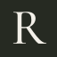

Roger · Daniel · Lydia
Tres iniciales.
Una misma mirada.
Una firma tipográfica para Maison RDL. Contraste entre serif editorial y letras de apoyo precisas, con espacio para que la fotografía y las prendas respiren.


Una identidad, varias escalas
La firma también
vive en lo pequeño.
La versión RDL conserva las tres iniciales. El icono R simplifica la lectura en pestañas y tamaños mínimos. Cada versión está trazada en SVG y se reproduce en una sola tinta.


La paleta
Materia y contraste.
Marfil
#F3F0E9
Carbón oliva
#262A22
Oliva profundo
#343B2E
Piedra
#E7E3D9
Bronce
#A89270
Marfil para el vestuario, oliva para la historia de la marca y carbón para el cierre. El bronce funciona como acento; no se aplica como texto pequeño sobre fondos claros.
Tipografía editorial
La elegancia
de lo esencial.
Cormorant Garamond · Regular e italic
Lectura y navegación
Siluetas depuradas.
Texturas que se sienten.
Un vestuario para hacerlo tuyo.
Manrope · Información, controles y precios
Una lectura de las tendencias de 2026.
La propuesta recoge el carácter de las serif contemporáneas, la tipografía como identidad y una composición contenida. Es una interpretación para Maison RDL, no una regla universal de lo que debe parecer una marca de lujo.
- Adobe · Modern Retro Serif, 2026
- Fontfabric · Typography Trends for 2026
- Bonhomme · Visual Codes of Luxury in 2026
Propuesta para revisión de Roger. Logotipo basado en tipografías con licencia SIL OFL, convertido a contornos vectoriales y con composición propia. No implica registro ni exclusividad marcaria.